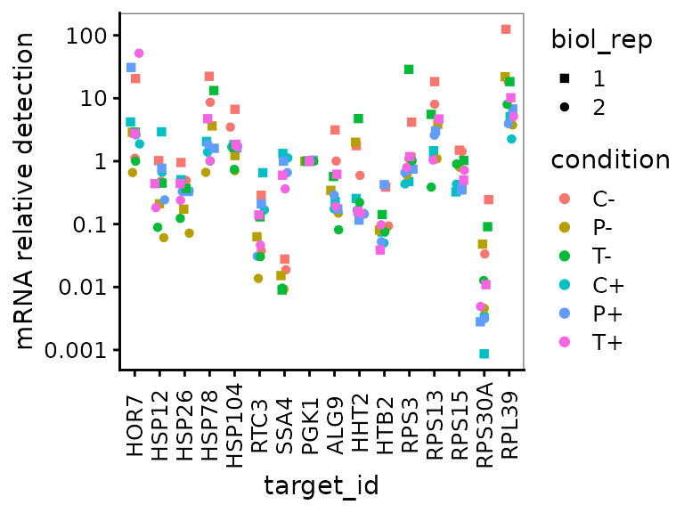
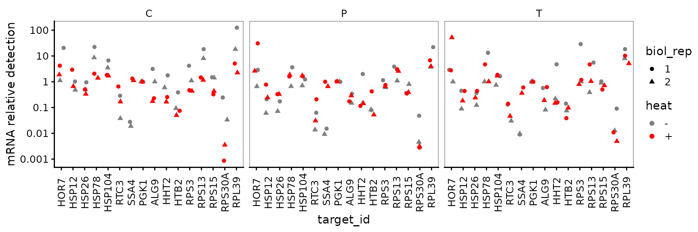
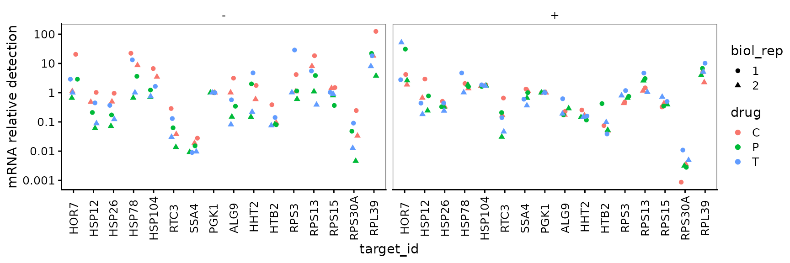
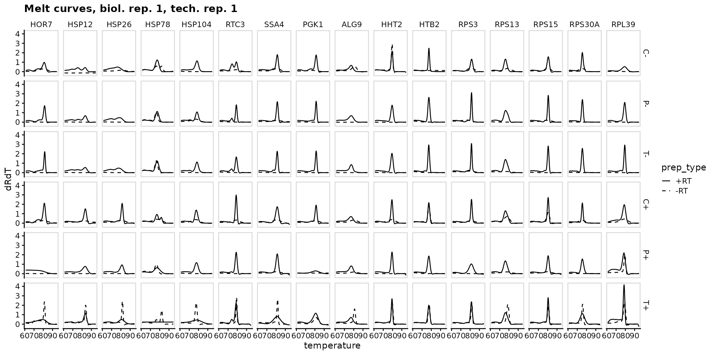

Multifactorial multi-plate qPCR analysis example
Edward Wallace
April 2022
Source:vignettes/multifactor_vignette.Rmd
multifactor_vignette.RmdSummary: an example multifactorial qPCR experiment.
This vignette shows how to use tidyqpcr functions to normalize and plot data from multifactorial experiments: many primer sets, many conditions, two plates. This vignette is a more advanced example with complex data.
This is real RT-qPCR data by Edward Wallace in June 2018, testing the effect of heat shock and transcription-targeting drugs in Saccharomyces cerevisiae yeast.
Pilot experiment
Do standard transcriptional inhibitors phenanthroline and thiolutin block the transcriptional heat shock response in yeast? This is a genuine question because some papers that argue that phenanthroline and thiolutin induce the transcriptional heat shock response.
Measure 16 primer sets: HOR7, HSP12, HSP26, HSP78, HSP104, RTC3, SSA4, PGK1, ALG9, HHT2, HTB2, RPS3, RPS13, RPS15, RPS30A, RPL39.
Test 6 conditions. That’s 3 transcriptional inhibitors (no drug control, 150ug/mL 1,10-phenanthroline, 3ug/mL thiolutin) in each of 2 conditions (- heat shock control, + heat shock 42C 10min), 2 biol reps each:
- *C-* Control -heat
- *P-* Phenanthroline -heat
- *T-* Thiolutin -heat
- *C+* Control +heat
- *P+* Phenanthroline +heat
- *T+* Thiolutin +heatSetup knitr options and load packages
# knitr options for report generation
knitr::opts_chunk$set(
warning = FALSE, message = FALSE, echo = TRUE, cache = FALSE,
results = "show"
)
# Load packages
library(tidyr)
library(ggplot2)
library(dplyr)
library(tidyqpcr)
# set default theme for graphics
theme_set(theme_bw(base_size = 11) %+replace%
theme(
strip.background = element_blank()
))Label and plan plates
Reverse transcription by random primers mixed with oligo-dT.
# list target_ids of primer sets
target_id_levels <- c(
"HOR7", "HSP12", "HSP26", "HSP78",
"HSP104", "RTC3", "SSA4", "PGK1",
"ALG9", " HHT2", "HTB2", "RPS3",
"RPS13", "RPS15", "RPS30A", "RPL39"
)
rowkey <- tibble(
well_row = LETTERS[1:16],
target_id = factor(target_id_levels, levels = target_id_levels)
)
# Set up experimental samples
heat_levels <- c("-", "+")
heat_values <- factor(rep(heat_levels, each = 3), levels = heat_levels)
drug_levels <- c("C", "P", "T")
drug_values <- factor(rep(drug_levels, times = 2), levels = drug_levels)
condition_levels <- paste0(drug_levels, rep(heat_levels, each = 3))
condition_values <- factor(condition_levels, levels = condition_levels)
colkey <- create_colkey_6_in_24(
heat = heat_values,
drug = drug_values,
condition = condition_values
)
plateplan <-
label_plate_rowcol(
create_blank_plate(well_row = LETTERS[1:16], well_col = 1:24),
rowkey, colkey
)Display the plate plan using display_plate_qpcr.
display_plate_qpcr(plateplan %>%
mutate(sample_id = condition))
Note that display_plate_qpcr requires a column called
sample_id, which here we had to make from the
condition variable using
mutate(sample_id=condition). The reason for doing this is
that we have replicate samples of the same condition in different
plates, and so we assign the unique sample name for each replicate after
loading the plates together using unite in the next code
chunk.
Load and summarize data
# read my plate data, one at a time, with biol_rep and plate number
# NOTE: system.file() accesses data from this R package
# To use your own data, remove the call to system.file(),
# instead pass your data's filename to read_lightcycler_1colour_cq()
# or to another relevant read_ function
file_path_cq_plate1 <- system.file("extdata",
"Edward_qPCR_TxnInhibitors_HS_2018-06-15_plate1_Cq.txt.gz",
package = "tidyqpcr")
plate1 <- file_path_cq_plate1 %>%
read_lightcycler_1colour_cq() %>%
left_join(plateplan, by = "well") %>%
mutate(biol_rep = "1", plate = "1")
file_path_cq_plate2 <- system.file("extdata",
"Edward_qPCR_TxnInhibitors_HS_2018-06-15_plate2_Cq.txt.gz",
package = "tidyqpcr")
plate2 <- file_path_cq_plate2 %>%
read_lightcycler_1colour_cq() %>%
left_join(plateplan, by = "well") %>%
mutate(biol_rep = "2", plate = "2")
# combine data from both plates into a single data frame
plates <- bind_rows(plate1, plate2) %>%
unite(sample_id, condition, biol_rep, sep = "", remove = FALSE)
summary(plates)## include color well sample_info
## Mode:logical Min. : 255 Length:768 Length:768
## TRUE:768 1st Qu.: 255 Class :character Class :character
## Median : 255 Mode :character Mode :character
## Mean : 9738
## 3rd Qu.: 255
## Max. :65280
##
## cq concentration standard status well_row
## Min. : 3.11 Min. : NA Min. :0 Mode:logical A : 48
## 1st Qu.:15.92 1st Qu.: NA 1st Qu.:0 NA's:768 B : 48
## Median :18.12 Median : NA Median :0 C : 48
## Mean :19.86 Mean :NaN Mean :0 D : 48
## 3rd Qu.:21.19 3rd Qu.: NA 3rd Qu.:0 E : 48
## Max. :37.51 Max. : NA Max. :0 F : 48
## NA's :112 NA's :768 (Other):480
## well_col prep_type tech_rep heat drug sample_id condition
## 1 : 32 +RT:576 1:384 -:384 C:256 Length:768 C-:128
## 2 : 32 -RT:192 2:192 +:384 P:256 Class :character P-:128
## 3 : 32 3:192 T:256 Mode :character T-:128
## 4 : 32 C+:128
## 5 : 32 P+:128
## 6 : 32 T+:128
## (Other):576
## target_id biol_rep plate
## HOR7 : 48 Length:768 Length:768
## HSP12 : 48 Class :character Class :character
## HSP26 : 48 Mode :character Mode :character
## HSP78 : 48
## HSP104 : 48
## RTC3 : 48
## (Other):480Plot unnormalized data
-RT controls are low
ggplot(data = plates) +
geom_point(aes(x = target_id, y = cq, shape = condition, colour = condition),
position = position_jitter(width = 0.2, height = 0)
) +
labs(
y = "Cycle count to threshold",
title = "All reps, unnormalized"
) +
scale_shape_manual(values = c(15:18, 5:6)) +
facet_grid(biol_rep ~ prep_type) +
theme(
axis.text.x = element_text(angle = 90, vjust = 0.5),
panel.border = element_rect(
fill = NA, linetype = 1,
colour = "grey50", size = 0.5
)
)
Normalize Cq to PGK1, within Sample only
platesnorm <- plates %>%
filter(prep_type == "+RT") %>%
calculate_deltacq_bysampleid(ref_target_ids = "PGK1")
platesmed <- platesnorm %>%
group_by(sample_id, condition, biol_rep, heat, drug, target_id) %>%
summarize(
delta_cq = median(delta_cq, na.rm = TRUE),
rel_abund = median(rel_abund, na.rm = TRUE)
)
filter(platesmed, target_id == "HSP26")## # A tibble: 12 × 8
## # Groups: sample_id, condition, biol_rep, heat, drug [12]
## sample_id condition biol_rep heat drug target_id delta_cq rel_abund
## <chr> <fct> <chr> <fct> <fct> <fct> <dbl> <dbl>
## 1 C-1 C- 1 - C HSP26 0.0700 0.953
## 2 C-2 C- 2 - C HSP26 1.02 0.493
## 3 C+1 C+ 1 + C HSP26 0.98 0.507
## 4 C+2 C+ 2 + C HSP26 1.58 0.334
## 5 P-1 P- 1 - P HSP26 2.53 0.173
## 6 P-2 P- 2 - P HSP26 3.8 0.0718
## 7 P+1 P+ 1 + P HSP26 1.60 0.330
## 8 P+2 P+ 2 + P HSP26 1.60 0.330
## 9 T-1 T- 1 - T HSP26 1.44 0.369
## 10 T-2 T- 2 - T HSP26 3.02 0.123
## 11 T+1 T+ 1 + T HSP26 1.19 0.441
## 12 T+2 T+ 2 + T HSP26 2.06 0.240Plot normalized data, all reps
ggplot(data = platesnorm) +
geom_point(aes(x = target_id,
y = delta_cq,
shape = condition,
colour = condition),
position = position_jitter(width = 0.2, height = 0)
) +
labs(y = "Cq relative to PGK1") +
scale_shape_manual(values = c(15:18, 5:6)) +
facet_grid(biol_rep ~ .) +
theme(
axis.text.x = element_text(angle = 90, vjust = 0.5),
panel.border = element_rect(
fill = NA, linetype = 1,
colour = "grey50", size = 0.5
)
)
Plot normalized data, summarized vs target_id
All on same axes
This plot shows all the summarized data on the same axes, but it is hard to pick out the different conditions by eye.
ggplot(data = platesmed) +
geom_point(aes(x = target_id,
y = rel_abund,
shape = biol_rep,
colour = condition),
position = position_jitter(width = 0.2, height = 0)
) +
scale_shape_manual(values = c(15:18, 5:6)) +
scale_y_log10("mRNA relative detection",
labels = scales::label_number()) +
theme(axis.text.x = element_text(angle = 90, vjust = 0.5))
Faceted by drug treatment
This plot shows all the summarized data “faceted” on different axes for different drug treatments. It highlights that, for example, SSA4 detection increases in response to heat in all drug treatments.
ggplot(data = platesmed) +
geom_point(aes(x = target_id, y = rel_abund, shape = biol_rep, colour = heat),
position = position_jitter(width = 0.2, height = 0)
) +
facet_wrap(~drug, ncol = 3) +
scale_colour_manual(values = c("-" = "grey50", "+" = "red")) +
scale_y_log10("mRNA relative detection",
labels = scales::label_number()) +
theme(axis.text.x = element_text(angle = 90, vjust = 0.5))
Faceted by heat shock condition
By contrast, this plot shows all the summarized data “faceted” on different axes for different conditions. This shows that there is no clear response to the drug treatments in either condition.
ggplot(data = platesmed) +
geom_point(aes(x = target_id, y = rel_abund, shape = biol_rep, colour = drug),
position = position_jitter(width = 0.2, height = 0)
) +
facet_wrap(~heat, ncol = 3) +
scale_y_log10("mRNA relative detection",
labels = scales::label_number()) +
theme(axis.text.x = element_text(angle = 90, vjust = 0.5))
Melt and Amplification Curves
# NOTE: system.file() accesses data from this R package
# To use your own data, remove the call to system.file(),
# instead pass your data's filename to read_lightcycler_1colour_cq()
# or to another relevant read_ function
file_path_raw_plate1 <- system.file("extdata/Edward_qPCR_TxnInhibitors_HS_2018-06-15_plate1.txt.gz",
package = "tidyqpcr")
plate1curve <- file_path_raw_plate1 %>%
read_lightcycler_1colour_raw() %>%
debaseline() %>%
left_join(plateplan, by = "well") %>%
mutate(biol_rep = 1, plate = 1)
file_path_raw_plate2 <- system.file("extdata/Edward_qPCR_TxnInhibitors_HS_2018-06-15_plate2.txt.gz",
package = "tidyqpcr")
plate2curve <- file_path_raw_plate2 %>%
read_lightcycler_1colour_raw() %>%
debaseline() %>%
left_join(plateplan, by = "well") %>%
mutate(biol_rep = 2, plate = 2)
platesamp <- bind_rows(plate1curve, plate2curve) %>%
filter(program_no == 2)
platesmelt <- bind_rows(plate1curve, plate2curve) %>%
filter(program_no == 3) %>%
calculate_drdt_plate() %>%
filter(temperature >= 61)Melt Curves, biol_rep 1
ggplot(
data = platesmelt %>%
filter(tech_rep == 1, biol_rep == 1),
aes(x = temperature, y = dRdT, linetype = prep_type)
) +
facet_grid(condition ~ target_id) +
geom_line() +
scale_linetype_manual(values = c("-RT" = "dashed", "+RT" = "solid")) +
scale_x_continuous(breaks = seq(60, 100, 10),
minor_breaks = seq(60, 100, 5)) +
labs(title = "Melt curves, biol. rep. 1, tech. rep. 1") +
theme(panel.grid = element_blank())
Melt Curves, biol_rep 2
ggplot(
data = platesmelt %>%
filter(tech_rep == 1, biol_rep == 2),
aes(x = temperature, y = dRdT, linetype = prep_type)
) +
facet_grid(condition ~ target_id) +
geom_line() +
scale_linetype_manual(values = c("-RT" = "dashed", "+RT" = "solid")) +
scale_x_continuous(breaks = seq(60, 100, 10),
minor_breaks = seq(60, 100, 5)) +
labs(title = "Melt curves, biol. rep. 2, tech. rep. 1") +
theme(panel.grid = element_blank())Amp Curves, biol_rep 1
ggplot(
data = platesamp %>%
filter(tech_rep == 1, biol_rep == 1),
aes(x = cycle, y = fluor_signal, linetype = prep_type)
) +
facet_grid(condition ~ target_id) +
geom_line() +
scale_linetype_manual(values = c("-RT" = "dashed", "+RT" = "solid")) +
expand_limits(y = 0) +
labs(title = "Amp. curves, biol. rep. 1, tech. rep. 1") +
theme(panel.grid = element_blank())
ggplot(
data = platesamp %>%
filter(tech_rep == 1, biol_rep == 2),
aes(x = cycle, y = fluor_signal, linetype = prep_type)
) +
facet_grid(condition ~ target_id) +
geom_line() +
scale_linetype_manual(values = c("-RT" = "dashed", "+RT" = "solid")) +
expand_limits(y = 0) +
labs(title = "Amp. curves, biol. rep. 2, tech. rep. 1") +
theme(panel.grid = element_blank())